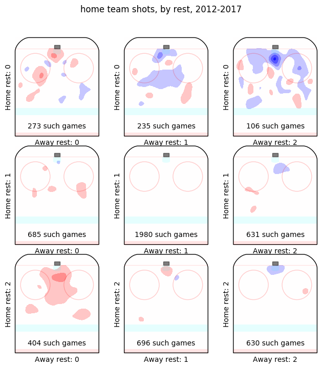
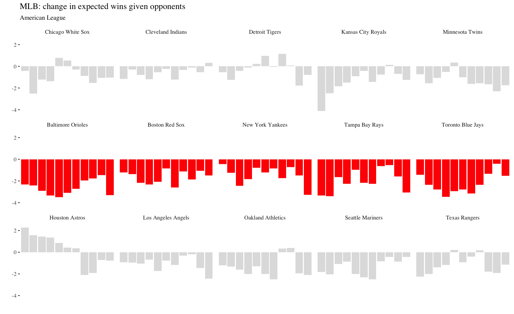
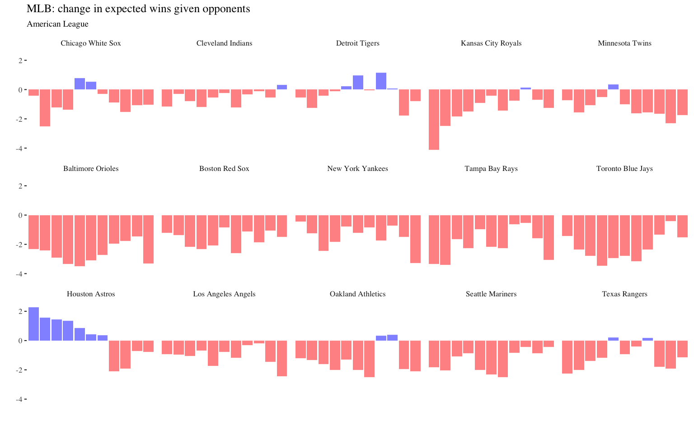
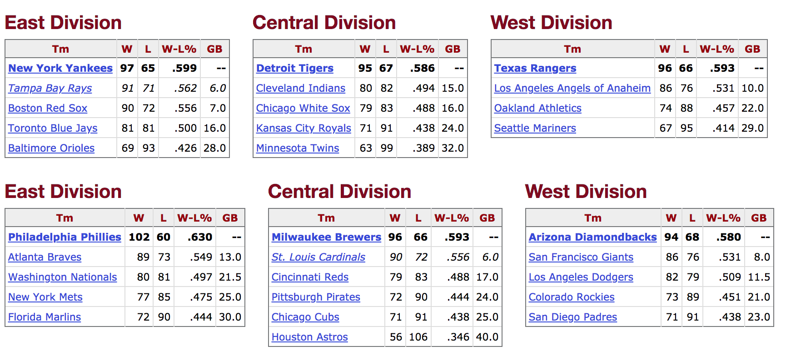

Schedule strength in professional sports

Michael Lopez (with Gregory Matthews and Benjamin Baumer) https://github.com/bigfour/competitiveness.
Michael Lopez (with Gregory Matthews, Benjamin Baumer
Michael Lopez (with Gregory Matthews and Benjamin Baumer) https://github.com/bigfour/competitiveness.


Observable league factors:

\[ E[\text{logit}(p_{(q,s,k) ij})] = \theta_{(q,s,k) i} - \theta_{(q, s, k) j} + \alpha_{q_0} + \alpha_{(q) i^{\star}} \]
\[ E[\text{logit}(p_{(q,s,k) ij})] = \theta_{(q,s,k) i} - \theta_{(q, s, k) j} + \alpha_{q_0} + \alpha_{(q) i^{\star}} + \] \[ \beta_{(q,1)}(Rest_i) - \beta_{(q,2)}(Rest_j)\]
| Team | League | Home+ | Home- | Road+ | Road- | Net rest |
|---|---|---|---|---|---|---|
| Philadelphia Phillies | MLB | 30 | 38 | 12 | 32 | -28 |
| Los Angeles Lakers | NBA | 78 | 17 | 27 | 147 | -59 |
| Buffalo Bills | NFL | 9 | 11 | 5 | 11 | -8 |
| Columbus Blue Jackets | NHL | 83 | 32 | 21 | 104 | -32 |
| Team | League | Home+ | Home- | Road+ | Road- | Net rest |
|---|---|---|---|---|---|---|
| Oakland Athletics | MLB | 27 | 27 | 43 | 21 | 22 |
| Milwaukee Bucks | NBA | 123 | 26 | 32 | 98 | 31 |
| Carolina Panthers | NFL | 8 | 7 | 9 | 4 | 6 |
| Anaheim Ducks | NHL | 124 | 24 | 23 | 97 | 26 |

\[ E[\text{logit}(p_{(q,s,k) ij})] = \theta_{(q,s,k) i} - \theta_{(q, s, k) j} + \alpha_{q_0} + \alpha_{(q) i^{\star}} + \] \[ \beta_{(q,1)}(Rest_i) - \beta_{(q,2)}(Rest_j)\]
For team \(i\) in sport \(q\) in season \(s\),
\[ Wins_{(q, s) i}|\theta_{(q,s,k) i}, \theta_{(q,s,k) j }, \alpha_{q_0}, \alpha_{(q) i^{\star}}, \beta_{(q,1)}, \beta_{(q,2)} = \] \[\sum_{g}p_{(q,s,k) ij}*I(Home_{g,i} = 1) + \sum_{g}(1 - p_{(q,s,k) ij})*I(Home_{g,j} = 1)\]
Wins due to rest =\[ Wins_{(q, s) i}|\theta_{(q,s,k) i}, \theta_{(q,s,k)j }, \alpha_{q_0}, \alpha_{(q) i^{\star}}, \beta_{(q,1)}, \beta_{(q,2)} - \] \[Wins_{(q, s) i}|\theta_{(q,s,k) i}, \theta_{(q,s,k)j }, \alpha_{q_0}, \alpha_{(q) i^{\star}}, \beta_{(q,1)} = 0, \beta_{(q,2)} = 0\]
Wins due to opponent caliber =\[ Wins_{(q, s) i}|\theta_{(q,s,k) i}, \theta_{(q,s,k)j }, \alpha_{q_0}, \alpha_{(q) i^{\star}}, \beta_{(q,1)}, \beta_{(q,2)} - \] \[Wins_{(q, s) i}|\theta_{(q,s,k) i}, \theta_{(q,s,k)j } = 0, \alpha_{q_0}, \alpha_{(q) i^{\star}}, \beta_{(q,1)}, \beta_{(q,2)}\]
| team | season | Rest wins | Schedule wins |
|---|---|---|---|
| Toronto Blue Jays | 2006 | -0.06 | -1.44 |
| Toronto Blue Jays | 2007 | -0.02 | -2.34 |
| Toronto Blue Jays | 2008 | -0.02 | -2.77 |
| Toronto Blue Jays | 2009 | 0.03 | -3.47 |
| team | season | Rest wins | Schedule wins |
|---|---|---|---|
| Los Angeles Lakers | 2006 | -0.36 | -0.45 |
| Los Angeles Lakers | 2007 | -0.40 | -0.88 |
| Los Angeles Lakers | 2008 | -0.49 | -2.69 |
| Los Angeles Lakers | 2009 | -0.82 | -1.00 |




2011 World Series winning Cardinals (90 wins, +3.3 rest wins)

More info: Paper (https://arxiv.org/abs/1701.05976), Github (https://github.com/bigfour/competitiveness)
“How often does the best team win?”, Lopez/Baumer/Matthews
“The Vegas Flu”, Lopez, 2018
“Impact of rest”, McCurdy, 2017
“Scheduling effects in the NBA and NHL…”, Osborne, 2017 NESSIS